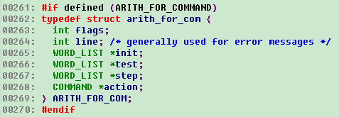
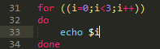
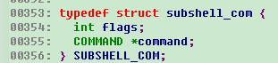
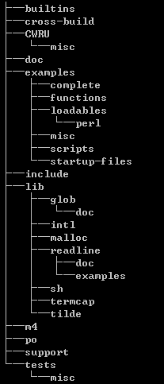
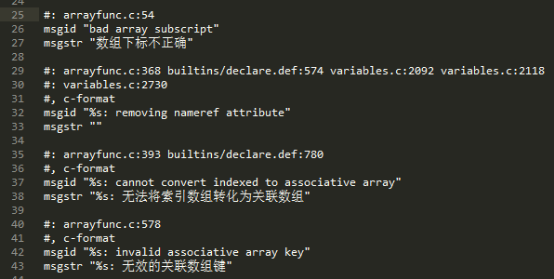
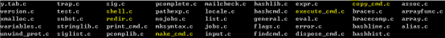
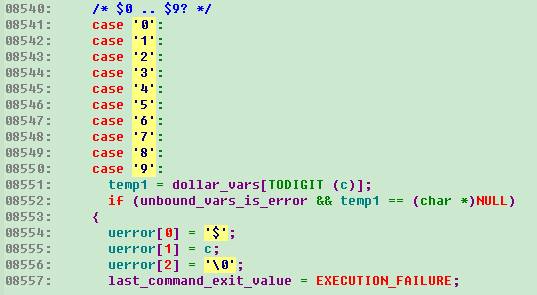
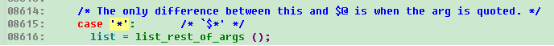
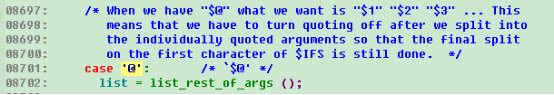
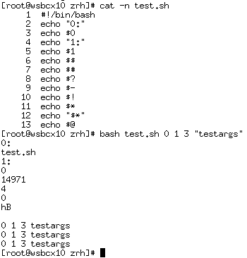

Bash源码分析(4)
周荣华
作者简介：10年通讯底层研发经验，熟悉linux/vxworks等实时操作系统的内核原理和实现，在虚拟化的openstack，kubernetes，docker等领域也初有涉猎。
摘要：本文解读最后几个数据结构，算术for，子shell和协程，并对源代码中重要的目录和文件做了简单说明。
3 bash使用到的主要数据结构介绍
3.13 ARITH_FOR_COM

ARITH_FOR_COM有点像C语言里面的for循环，几个属性中有初始化，测试边界命令，步进命令和实际的执行体。除了算术运算要求的两层小括号和do，done关键字，完整代码和C语言里面的for是不是没啥明显差别？J

3.14 SUBSHELL_COM

SUBSHELL_COM的结构体定义比较简单，就是一个命令属性，看来关键的复杂度还是在写shell脚本本身上J，不过对bash本身而言，就是把脚本文件读进来，后面一行一行执行的时候，和其他普通命令没有差别。
3.15 COPROC_COM
.files/InsideBashSourceCode(4)455.png)
COPROC_COM的全称是coprocess，翻译成中文应该是协程的意思，不过shell里面的协程没有像高级语言那么复杂，对bash而言，执行结果和执行命令后面加一个&类似，不过可以制定协程的名字。
4 bash源代码的目录结构
现在才说源代码的目录结构是不是晚了点J。
前面分析数据结构的时候，基本上把每个命令的执行过程也简单过了一下，这样大家读代码的时候先有一个概貌，不至于一叶障目不见泰山。
用tree命令打印出来的目录结构如下，其中builtins目录里面是大多数内置命令（例如cd，pwd等）的实现，但没有看到ls命令，难道部分复杂命令还另外建了git库来实现？
Cross-build是交叉编译的设置。CWRU是修改记录，很多人在修改记录里面还留了自己的邮箱，有兴趣的读者是否可以和他们聊聊J。Doc是文档目录，包括html格式的和pdf格式的文档。Examples目录是各种脚本的例子，不知道怎么写复杂bash的读者有福了。Include目录里面是一些实现bash过程中经查会用到的一些结构体或者宏的定义，一般都是写和bash不直接联系的，直接要用到的定义都在最顶级目录下面。
Lib是实现bash种要用到的各种公共库，这些库的实现本身和bash的解析没有直接关系，统一放在lib目录。
M4是GUN的一种编程语言，类似宏，m4目录下面是用m4语言写的timespec结构体的定义相关头文件校验和时间统计相关的头文件校验宏。

Po又是GNU的一种编程语言，字面意思是可扩展组件，bash主要用它来实现多语种的扩展，每个语种都有自己的一个po文件，分别负责将代码里面的打印字符串转换成对应的语言。例如zh_CN.po里面定义了中文的各种字符串：

Support目录负责bash的手册html页面的生成。
Tests是很多自测用例。
最重要的代码都放在最突出的位置，顶级目录下面有44个c文件，其中最重要的有四个：shell.c，脚本的解析；make_cmd.c，命令生成；execute_cmd.c，命令执行；copy_cmd.c命令拷贝。前面对语法的具体用法代码多数都来自execute_cmd.c文件。

redir.c主要是各种重定向的定义和执行，前面讲到SIMPLE_COM的时候，曾经详细讲解过。
subst.c主要是对[]表达式的值替换。值得一提的是，这里对$开头的变量做了完整的说明。首先$0到$9分别对应脚本文件名，第一个入参，…，第九个入参。

$$执行shell的pid；$#执行脚本时传入的参数总数；$?上一次同步命令的执行结果，同步命令的意思是这个命令不执行完，就无法继续下面的执行，如果命令执行的过程中加了&，那$?无法得到其执行结果；$-脚本执行时的flags；$!，和$?相对，$!指的是上一个异步命令执行的结果。
.files/InsideBashSourceCode(4)1644.png)
$*和$@都是打印出剩余所有参数，按代码的说法，$*和$@的差别就是是否将带引号的参数去掉引号，实测结果打印出来的结果似乎是一样的。


实测效果：

Bash的源码解析到这里就结束了，更详细的内容，需要各位读者在实际使用时一一对应bash的源代码来得到更详细的解读，源码都来自于GNU的社区：https://git.savannah.gnu.org/git/bash.git，欢迎感兴趣的同事一起讨论分析。